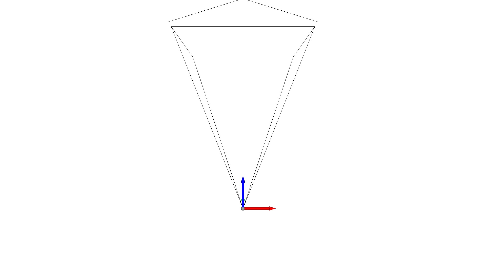

Note
Go to the end to download the full example code.
Camera Representation in 3D#
This visualization is inspired by Blender’s camera visualization. It will show the camera center, a virtual image plane at a desired distance to the camera center, and the top direction of the virtual image plane.
import numpy as np
import pytransform3d.transformations as pt
import pytransform3d.visualizer as pv
cam2world = pt.transform_from_pq([0, 0, 0, np.sqrt(0.5), -np.sqrt(0.5), 0, 0])
# default parameters of a camera in Blender
sensor_size = np.array([0.036, 0.024])
intrinsic_matrix = np.array([
[0.05, 0, sensor_size[0] / 2.0],
[0, 0.05, sensor_size[1] / 2.0],
[0, 0, 1]
])
virtual_image_distance = 1
fig = pv.Figure()
fig.plot_transform(A2B=cam2world, s=0.2)
fig.plot_camera(
cam2world=cam2world, M=intrinsic_matrix, sensor_size=sensor_size,
virtual_image_distance=virtual_image_distance)
if "__file__" in globals():
fig.show()
else:
fig.save_image("__open3d_rendered_image.jpg")
Total running time of the script: (0 minutes 0.288 seconds)